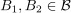
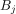
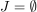

Let be a set and a collection of subsets. is a basis for a topology on , if the following statements hold:
For  and suitable  (possibly ) it holds that:
see: Topology generated by a basis
Author: Anton Zakrewski
Email: anton.zakrewski@campus.lmu.de
 be a
be a  a collection of
a collection of  is a basis for a
is a basis for a